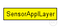
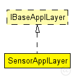

This documentation is released under the Creative Commons license
This documentation is released under the Creative Commons license@brief Application layer to test lower layer implementations. SensorApplLayer waits a time initializationTime, then starts sending nbPackets (of size headerLength) to host destAddr. The time intervals between two packets can follow three distributions: periodic (fixed), uniform or exponential.
@ingroup application
Author: Jerome Rousselot, Amre El-Hoiydi
The following diagram shows usage relationships between types. Unresolved types are missing from the diagram. Click here to see the full picture.
The following diagram shows inheritance relationships for this type. Unresolved types are missing from the diagram. Click here to see the full picture.
| Name | Type | Default value | Description |
|---|---|---|---|
| debug | bool | false |
debug switch |
| stats | bool | true |
stats generation switch |
| trace | bool | false |
activates detailed logging (per source latencies and vector logging). stats must be true. |
| broadcastPackets | bool | false |
send packets in broadcast mode |
| nbPackets | double | 0 | |
| destAddr | int | 0 | |
| trafficType | string | "periodic" |
Can be one of: periodic, uniform or exponential |
| trafficParam | double | 1 s |
the mean time between two packets |
| initializationTime | double | 1 min |
minimum time before generation of the first packet |
| headerLength | int | 2 byte | |
| notAffectedByHostState | bool | true |
| Name | Direction | Size | Description |
|---|---|---|---|
| lowerLayerIn | input |
from network layer |
|
| lowerControlIn | input | ||
| lowerLayerOut | output |
to network layer |
|
| lowerControlOut | output |
// @brief Application layer to test lower layer implementations. // SensorApplLayer waits a time initializationTime, then starts sending // nbPackets (of size headerLength) to host destAddr. The time intervals // between two packets can follow three distributions: periodic (fixed), // uniform or exponential. // // @ingroup application // @author Jerome Rousselot, Amre El-Hoiydi simple SensorApplLayer like IBaseApplLayer { parameters: bool debug = default(false); // debug switch bool stats = default(true); // stats generation switch bool trace = default(false); // activates detailed logging (per source latencies and vector logging). stats must be true. bool broadcastPackets = default(false); // send packets in broadcast mode double nbPackets = default(0); int destAddr = default(0); string trafficType = default("periodic"); // Can be one of: periodic, uniform or exponential double trafficParam @unit(s) = default(1 s); // the mean time between two packets double initializationTime @unit(s) = default(1 min); // minimum time before generation of the first packet int headerLength @unit(byte) = default(2 byte); bool notAffectedByHostState = default(true); gates: input lowerLayerIn; // from network layer input lowerControlIn; output lowerLayerOut; // to network layer output lowerControlOut; }
This documentation is released under the Creative Commons license